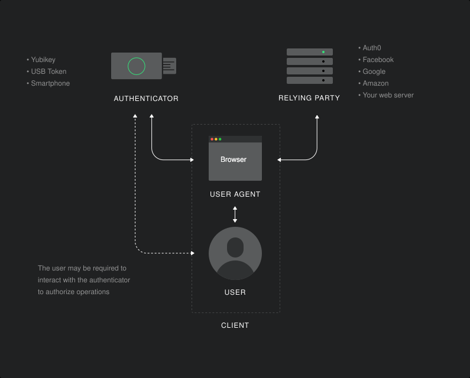

Passkeys are gaining popularity as a phishing-resistant passwordless approach to user authentication. When discussing the technical aspects of passkey implementation, WebAuthn is often mentioned. In this document, you will learn about the relationship between passkeys and WebAuthn, and will discover that WebAuthn is a piece in the puzzle of the infrastructure that makes passkeys work.
According to the FIDO Alliance, passkeys are a password replacement that provide a faster, easier, and more secure user login experience. User authentication based on passkeys is immune to phishing risks because passkeys don't rely on a shared secret as it happens with passwords.
Passkeys use the same infrastructure as WebAuthn and involve the same entities — user, user agent, authenticator, and relying party — as shown in the following diagram:

Technically, a passkey is a discoverable FIDO credential that is tied to a user account and a website or application. Let's break this definition down:
There are two types of passkeys: device-bound passkeys and synced passkeys. Let's go over the differences and their respective advantages and drawbacks.
Device-bound passkeys are also known as single-device passkeys. They are bound to the specific device on which they were created. This means that the private key can't leave that device, i.e., you can't copy it.
Typically, device-bound passkeys are stored on security keys, which guarantee that private keys can't be exported from the device.
The device-binding constraint makes this type of passkey a high-assurance possession factor. In other words, if you prove that you have this passkey, you also prove that you possess the security key.
Of course, there is a downside: if you lose the device, you also lose access to the passkey stored on it.
Synced passkeys, also known as multi-device passkeys, are not tied to a single device. They can be shared across devices and synchronized to a user's cloud account. For example, if you create a passkey on your Mac, you can sync it with your Apple ID in iCloud Keychain. Then, you can share your passkey with all your devices that are bound to your Apple ID, that is, all your Macs, iPhones, iPads, etc.
This simplifies the user experience because you don't have to create a different passkey for each device, and you have a backup in the cloud in case you lose one of your devices.
Note that the passkey stored in the cloud is end-to-end encrypted, so only you can access it.
Passkeys are a new type of credentials that allow users to prove their identity without sharing secrets and without the risk of phishing. The implementation of passkeys relies on a set of standard specifications known as FIDO 2. WebAuthn is one of the FIDO 2 specifications that enables passkey support in browsers.
Basically, WebAuthn provides applications with a JavaScript interface to create and manage passkeys for user authentication. Thanks to WebAuthn, the browser mediates access to authenticators where the user's passkeys are stored. If the authenticator is external, i.e. it's not the device the browser is running on, the other important FIDO 2 specification is involved to securely set up the communication: Client to Authenticator Protocols 2 (CTAP2). The synergy of WebAuthn and CTAP2 allows you to perform what is called Cross-Device Authentication (CDA).
The key difference between passkeys and WebAuthn is that passkeys are credentials that authenticate users securely and without phishing risks, while WebAuthn is a specification that allows developers to implement passkey support in their web applications.

Web Authentication is (partially) supported in most modern browsers.
Test your browserDepending on your state of residence, including if you are a California resident, you have the right to opt out of certain sharing of personal information with third-party ad partners. We may share personal information with third-party ad partners, such as through cookies or by providing lists of email addresses for potential customers, so that we can reach them across the web with relevant ads.
If you wish to opt out of this sharing of your personal data in connection with cookies, please update your
If you wish to opt out of email-based sharing, provide your email address at this link.